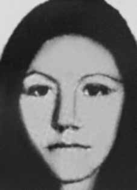

Dinaelza
Santana
Coqueiro
CIRCUNSTÂNCIAS DA MORTE
Segundo o Relatório Arroyo, Dinaelza deveria ter chegado a um ponto de encontro pré- estabelecido em 28 de dezembro de 1973, mas não compareceu à localidade. O último registro da guerrilheira com vida indica que, em 17 de novembro de 1973, ela esteve nas proximidades de um local onde houvera um tiroteio contra Elmo Corrêa, Antonio Teodoro de Castro e Micheás Gomes de Almeida. O ex-guia do exército Sinésio Martins Ribeiro afirmou, em depoimento de 2001, citado pelo livro da CEMDP, que soube da prisão de Dinaelza pelo mateiro Manoel Gomes. Ela estaria próxima à OP-1, dentro da mata, quando foi abordada e levada à casa de Arlindo Piauí para ser interrogada. Como não teria fornecido nenhuma informação e ainda teria cuspido nos militares, foi executada. Esta versão é corroborada pelo relatório elaborado pelo MPF em 2002, como indica o livro Dossiê Ditadura. Já o jornalista Elio Gaspari, em seu livro, menciona depoimento de José Veloso de Andrade, que trabalhava na lanchonete da base militar da Bacaba e informou ter visto Dinaelza viva na base militar. O jornalista Leonencio Nossa aponta que, no momento de sua execução, Dinaelza estava sob custódia dos militares: Na Casa Azul, o tenente-coronel Léo Frederico Cinelli mandou Curió [Sebastião Rodrigues de Moura] buscar Maria Dina de helicóptero. […] “Convicta” e “persistente”, na avaliação do agente, ela cuspiu no rosto dele. Espumando de ódio, jogando o corpo para um lado e para o outro. Foi empurrada até o helicóptero. […] Maria Dina ficou dois dias na tortura na Casa Azul. […] Com gazes nos braços queimados, bermuda preta e blusa clara, foi levada até a casa do guia Arlindo Piauí […] Após uma hora de caminhada o grupo parou. Maria Dina estava sentada no chão quando os militares descarregaram as armas. De volta à casa de Antônia [Ribeiro, esposa de Piauí], Curió reclamou que a arma tinha engasgado no momento do disparo. Outro relato – de Cícero Pereira Gomes à Comissão de Direitos Humanos da Câmara dos Deputados, registrado no relatório da CEMDP – diz respeito a um possível local de sepultura do corpo da guerrilheira. O depoente informou que ele estaria enterrado perto de uma casa de tábua, na altura do quilômetro 114 da rodovia que liga São Geraldo a Marabá. Em matéria do Correio Braziliense de 28/11/2001, Eumano Silva se refere também ao depoimento de Cícero, completando que “a cova fica do lado esquerdo da curva de um caminho velho, perto de onde havia uma antiga tapera”. Por fim, os documentos militares indicam sua morte em data posterior. O relatório do Ministério da Marinha, encaminhado ao ministro da Justiça Maurício Corrêa em 1993, afirma que Dinaelza morreu em 8/4/1974,iv enquanto o Relatório do CIE, Ministério do Exército registra o dia seguinte.
According to the Arroyo Report, Dinaelza should have arrived at a pre-established meeting point on December 28, 1973, but did not arrive at the location. The last record of the guerrilla alive indicates that, on November 17, 1973, she was close to a place where there had been a shootout against Elmo Corrêa, Antonio Teodoro de Castro and Micheás Gomes de Almeida. Former army guide Sinésio Martins Ribeiro stated, in a 2001 statement, cited in the CEMDP book, that he learned of Dinaelza's arrest by woodsman Manoel Gomes. She was close to OP-1, inside the forest, when she was approached and taken to Arlindo Piauí's house to be interrogated. As she did not provide any information and even spat at the soldiers, she was executed. This version is corroborated by the report prepared by the MPF in 2002, as indicated in the book Dossiê Ditadura. Journalist Elio Gaspari, in his book, mentions testimony from José Veloso de Andrade, who worked in the cafeteria at the Bacaba military base and reported having seen Dinaelza alive at the military base. Journalist Leonencio Nossa points out that, at the time of her execution, Dinaelza was in military custody: At Casa Azul, lieutenant colonel Léo Frederico Cinelli sent Curió [Sebastião Rodrigues de Moura] to pick up Maria Dina by helicopter. […] “Convicted” and “persistent”, in the agent’s assessment, she spat in his face. Foaming with hatred, throwing his body from one side to the other. She was pushed to the helicopter. […] Maria Dina spent two days in torture at Casa Azul. […] With gauze on her burnt arms, black shorts and a light blouse, she was taken to guide Arlindo Piauí’s house […] After an hour of walking, the group stopped. Maria Dina was sitting on the ground when the soldiers discharged their weapons. Back at Antônia’s house [Ribeiro, Piauí’s wife], Curió complained that the gun had jammed when it was fired. Another report – from Cícero Pereira Gomes to the Human Rights Commission of the Chamber of Deputies, recorded in the CEMDP report – concerns a possible burial place for the guerrilla's body. The deponent reported that he would be buried near a wooden house, at kilometer 114 of the highway that connects São Geraldo to Marabá. In an article in Correio Braziliense dated 11/28/2001, Eumano Silva also refers to Cícero's statement, adding that “the grave is on the left side of the curve of an old path, close to where there was an old tapestry”. Finally, military documents indicate his death at a later date. The report from the Ministry of the Navy, sent to the Minister of Justice Maurício Corrêa in 1993, states that Dinaelza died on 8/4/1974,iv while the CIE Report, Ministry of the Army records the following day.
Según el Informe Arroyo, Dinaelza debió llegar a un punto de encuentro preestablecido el 28 de diciembre de 1973, pero no llegó al lugar. El último registro con vida de la guerrillera indica que, el 17 de noviembre de 1973, se encontraba cerca de un lugar donde se había producido un tiroteo contra Elmo Corrêa, Antonio Teodoro de Castro y Micheás Gomes de Almeida. El ex guía militar Sinésio Martins Ribeiro declaró, en una declaración de 2001, citada en el libro del CEMDP, que tuvo conocimiento de la detención de Dinaelza por el leñador Manoel Gomes. Estaba cerca de OP-1, dentro del bosque, cuando fue abordada y llevada a la casa de Arlindo Piauí para ser interrogada. Como no proporcionó ninguna información e incluso escupió a los soldados, fue ejecutada. Esta versión es corroborada por el informe elaborado por el MPF en 2002, como se indica en el libro Dossiê Ditadura. El periodista Elio Gaspari, en su libro, menciona el testimonio de José Veloso de Andrade, quien trabajaba en la cafetería de la base militar de Bacaba y relató haber visto a Dinaelza con vida en la base militar. El periodista Leonencio Nossa señala que, en el momento de su ejecución, Dinaelza se encontraba bajo custodia militar: En Casa Azul, el teniente coronel Léo Frederico Cinelli envió a Curió [Sebastião Rodrigues de Moura] a recoger a María Dina en un helicóptero. […] “Condenado” y “persistente”, según la valoración del agente, le escupió en la cara. Espuma de odio, lanzando su cuerpo de un lado a otro. La empujaron hasta el helicóptero. […] María Dina pasó dos días torturada en Casa Azul. […] Con gasas en los brazos quemados, short negro y blusa clara, fue llevada a guiar la casa de Arlindo Piauí […] Luego de una hora de caminata, el grupo se detuvo. María Dina estaba sentada en el suelo cuando los soldados dispararon sus armas. De vuelta en casa de Antônia [Ribeiro, esposa de Piauí], Curió se quejó de que el arma se había trabado al disparar. Otro informe – de Cícero Pereira Gomes a la Comisión de Derechos Humanos de la Cámara de Diputados, recogido en el informe del CEMDP – se refiere a un posible lugar de sepultura para el cuerpo del guerrillero. El declarante informó que sería enterrado cerca de una casa de madera, en el kilómetro 114 de la carretera que conecta São Geraldo con Marabá. En un artículo del Correio Braziliense del 28/11/2001, Eumano Silva también se refiere a la declaración de Cícero, añadiendo que “la tumba está en el lado izquierdo de la curva de un antiguo camino, cerca de donde había un antiguo tapiz”. Finalmente, documentos militares indican su muerte en una fecha posterior. El informe del Ministerio de Marina, enviado al Ministro de Justicia Maurício Corrêa en 1993, señala que Dinaelza falleció el 4/8/1974,iv mientras que el Informe CIE, del Ministerio del Ejército, registra el día siguiente.